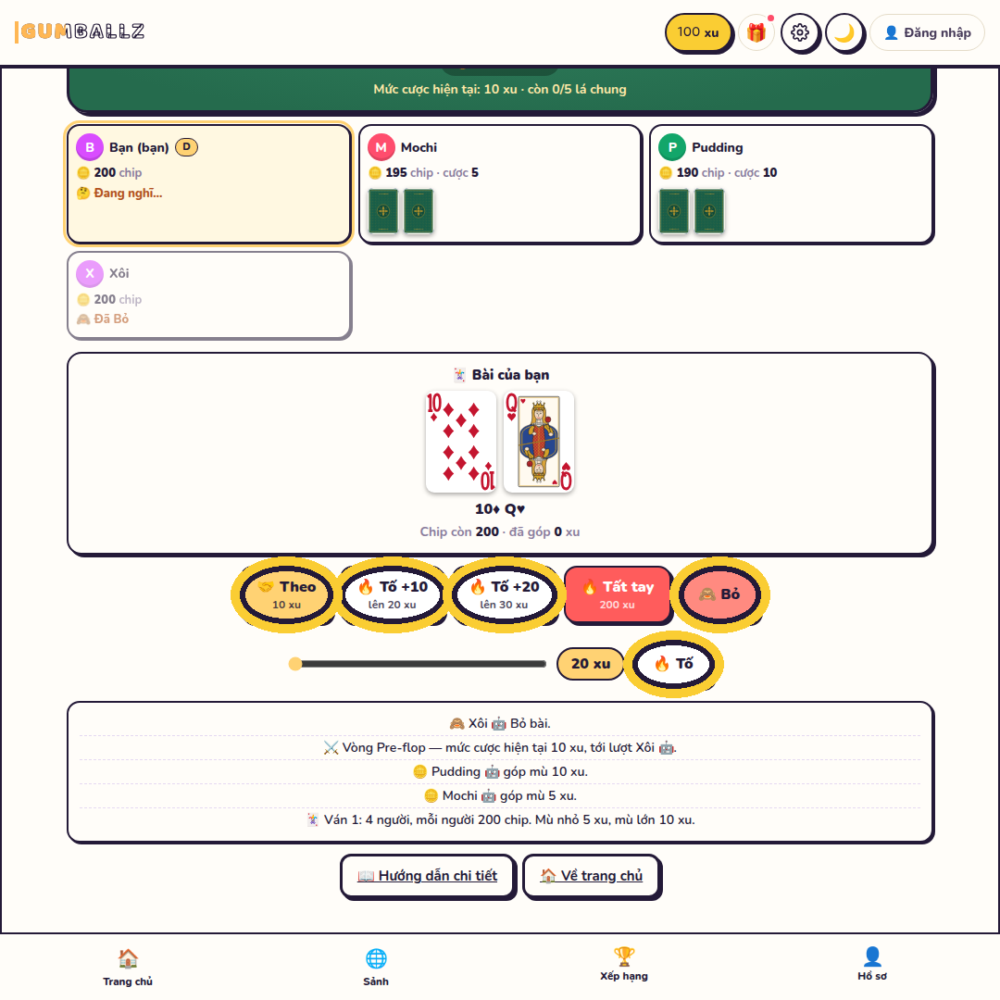

🎯 Mục tiêu
Xì Tố là Texas Hold'em — trò poker nổi tiếng nhất thế giới. Mỗi người được 2 lá tẩy (chỉ mình mình biết), rồi 5 lá chung được lật dần ra giữa bàn: Flop (3 lá), Turn (1 lá), River (1 lá). Ghép 2 lá tẩy + 5 lá chung thành tay bài 5 lá mạnh nhất — ai mạnh nhất hốt gà, hoặc dọa cho mọi người Bỏ hết thì thắng luôn không cần lật bài!
🃏 Trình tự một ván
- Góp mù: 2 người ngồi sau nhà cái (dealer) góp mù trước — mù nhỏ 5 xu, mù lớn 10 xu (chủ phòng chọn "chơi vui 0 xu" thì bỏ qua bước này).
- Pre-flop: chia 2 lá tẩy mỗi người, rồi cược vòng đầu — người sau mù lớn đi trước.
- Flop: lật 3 lá chung, cược vòng 2.
- Turn: lật lá chung thứ 4, cược vòng 3.
- River: lật lá chung thứ 5, cược vòng cuối rồi lật bài (showdown).
⚔️ Các hành động khi cược
- Xem — không cược thêm (chỉ khi chưa có ai Tố).
- Theo — bỏ bằng mức cược hiện tại để ở lại ván.
- Tố — nâng mức cược lên (tối thiểu +10 xu so với mức hiện tại).
- Tất tay — cược hết số chip còn lại của mình.
- Bỏ — úp bài, mất số xu đã cược, chờ ván sau.
💰 Gà & chia gà
- Mỗi người bắt đầu ván với 200 chip. Mù và cược trừ vào ví xu của bạn (chế độ chơi vui 0 xu thì chỉ tính điểm).
- Người thắng hốt toàn bộ gà. Hòa bài thì chia đều gà, xu lẻ cho người ngồi sau nhà cái trước.
- Ai Tất tay với ít xu hơn chỉ được chia phần gà tới mức mình đã góp (side pot) — phần dư trả lại cho những người còn cược.
- Không đủ xu góp mù lớn thì vẫn chơi nhưng chỉ được thắng tới mức mình đã góp.
- Thắng ván được +10 xu, chơi 1 ván được +2 xu vào ví chung của trang.
🏆 Xếp hạng tay bài (mạnh → yếu)
- Thùng phá sảnh — 5 lá liên tiếp cùng chất (mạnh nhất).
- Tứ quý — 4 lá cùng số.
- Cù lũ — 3 lá cùng số + 1 đôi.
- Thùng — 5 lá cùng chất.
- Sảnh — 5 lá liên tiếp (A-2-3-4-5 là sảnh nhỏ nhất, 10-J-Q-K-A là lớn nhất).
- Sám cô — 3 lá cùng số.
- Hai đôi — 2 đôi khác số.
- Một đôi — 1 đôi.
- Mậu thầu — không có gì, so lá cao nhất.
💡 Mẹo chơi
- Đôi cao (AA, KK, QQ) và bài đồng chất liên tiếp (như J♠ Q♠) là bài tẩy mạnh — đừng ngại Tố.
- Bài yếu mà người ta Tố to thì Bỏ sớm cho đỡ tốn xu — chờ ván khác.
- Đôi khi bluff (Tố mạnh dù bài yếu) cũng thắng — nhưng đừng lạm dụng, bot Khó đọc bài lắm đấy!
- Chế độ chơi cùng máy (pass-and-play): mỗi người chỉ được xem bài tẩy của mình khi tới lượt — nhớ che màn hình nhé!
🎮 Chế độ chơi
- Online: tạo phòng, gửi mã 5 ký tự / link / QR cho bạn bè (2–9 người).
- Chơi với bot: Dễ (ham gọi, ít Bỏ) hoặc Khó (tính pot odds, biết bluff).
- Chơi cùng máy: 2–9 người chung một máy, bài tẩy chỉ hiện khi tới lượt mình.